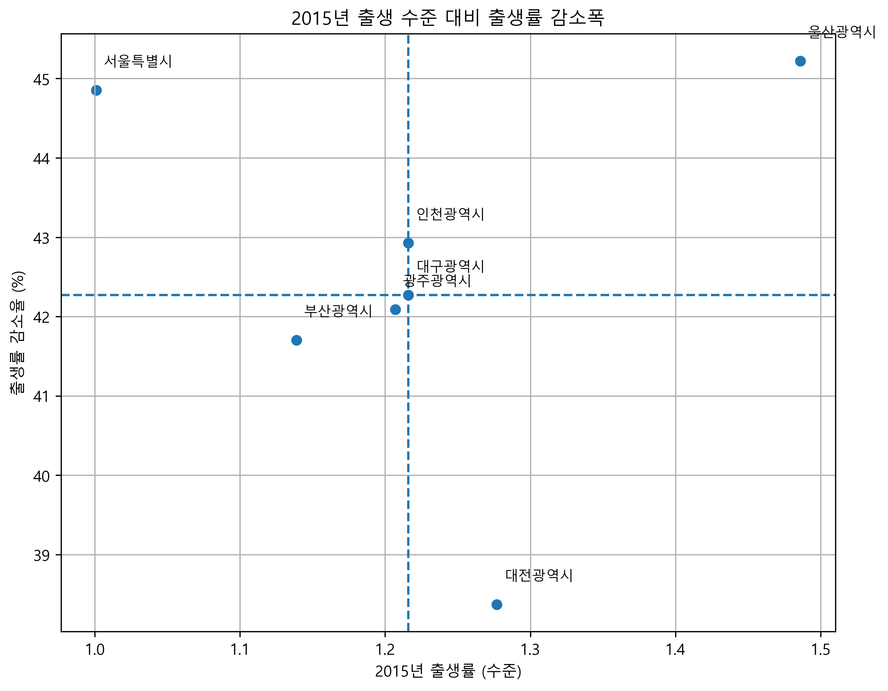
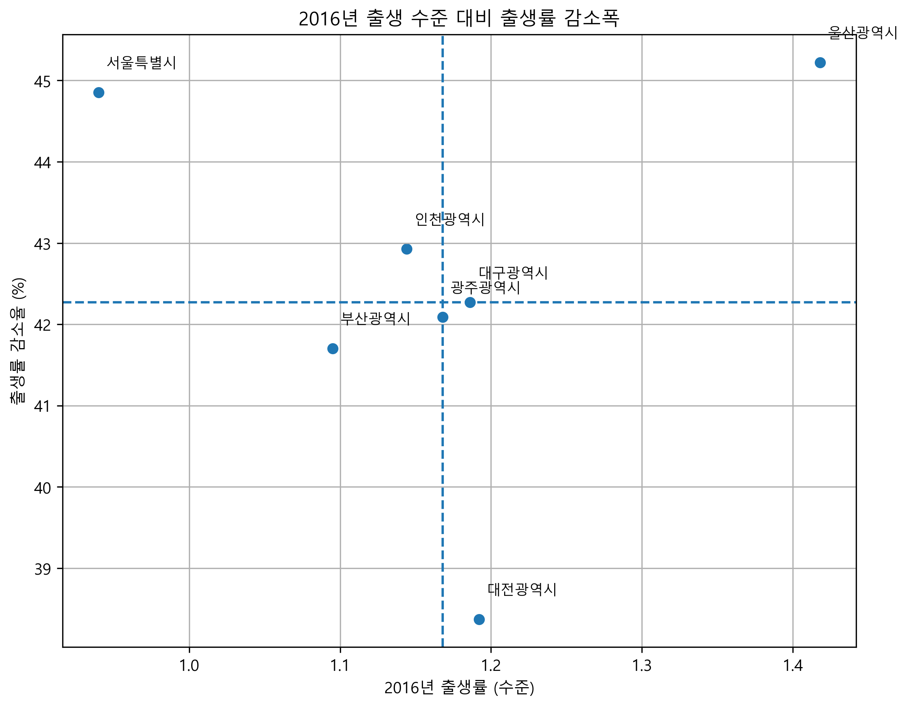
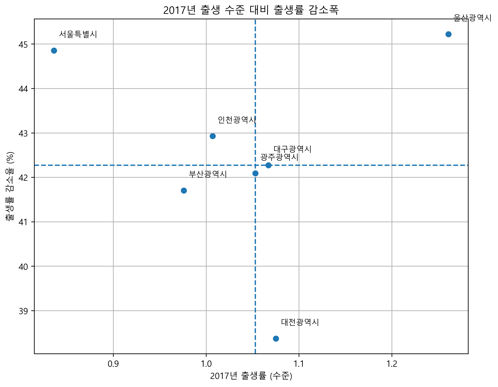
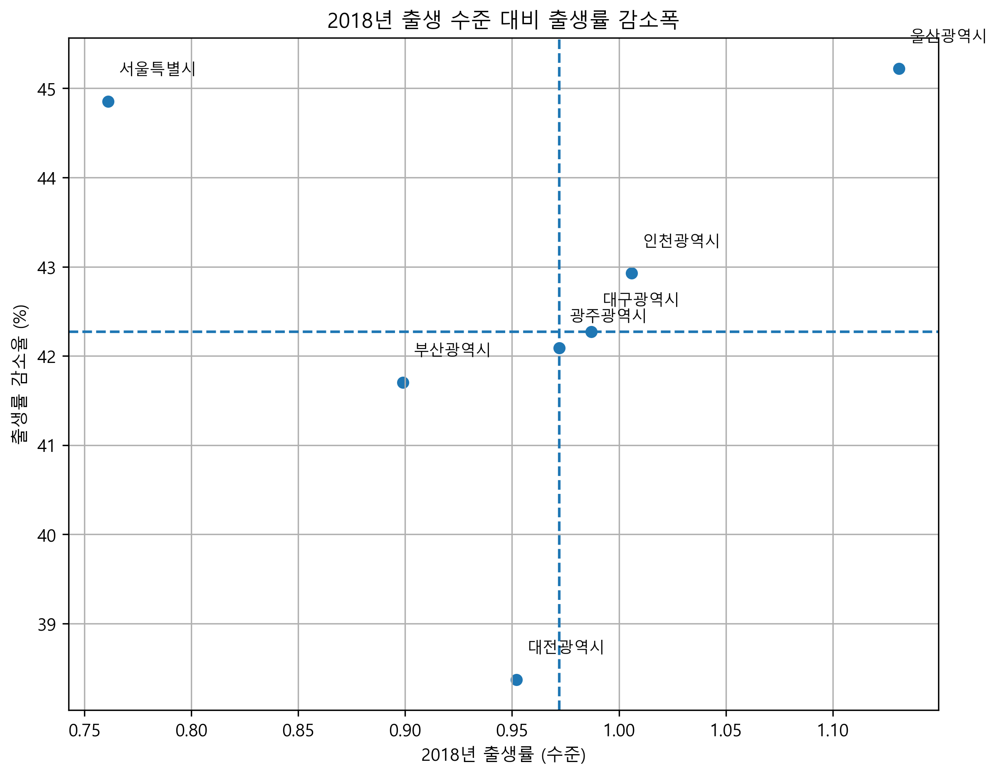
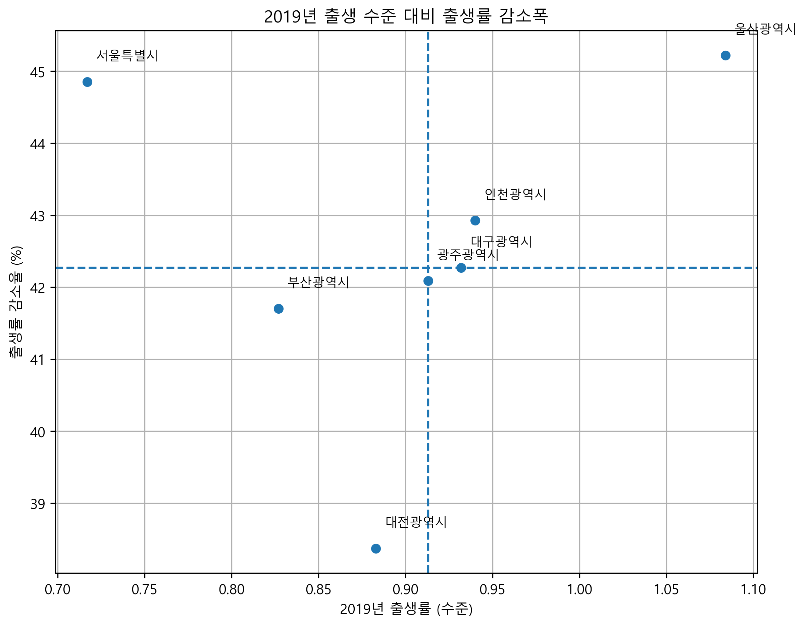
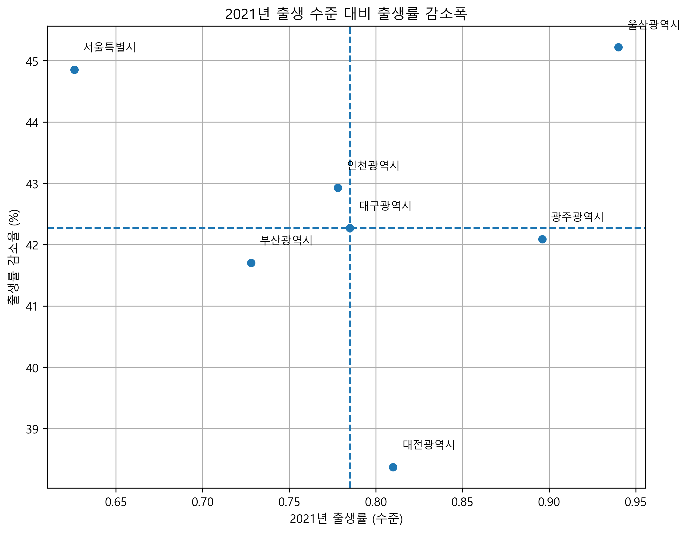
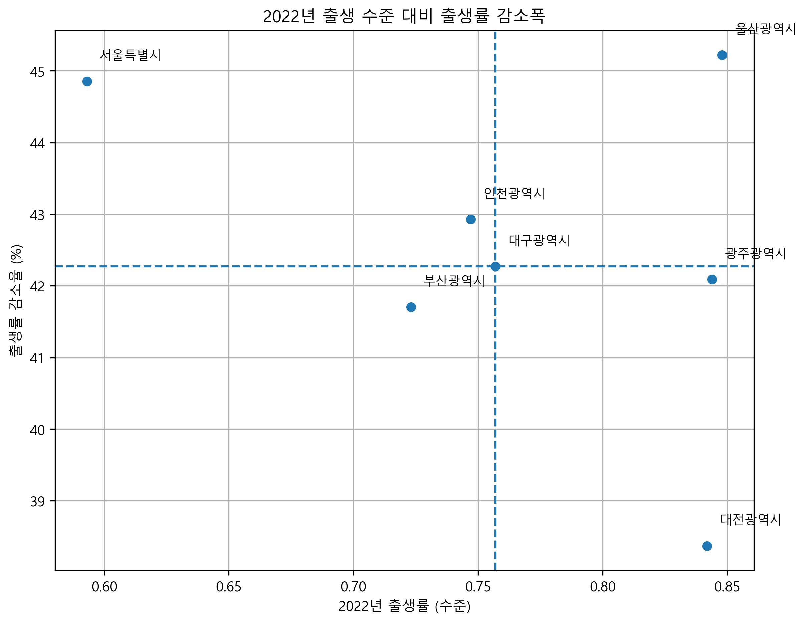
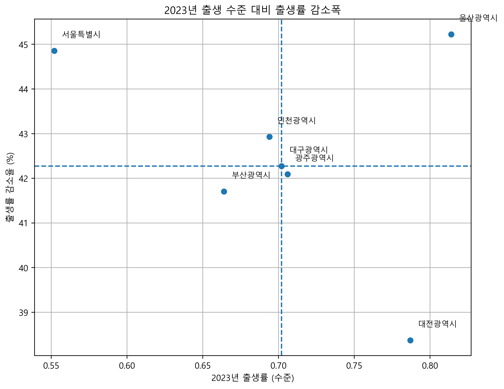
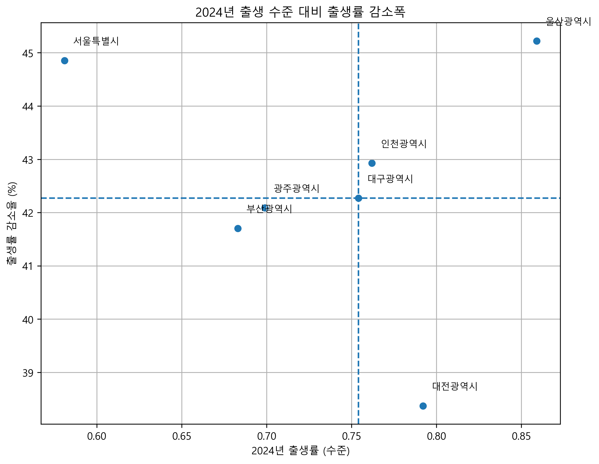

📊 데이터 시각화 및 분석 결과
📍 분석 순서
🔍 분석 결과 내용 (1)
✅ 광역시 별로 과거 대비 현재의 출산률이 얼마나 급격히 낮아졌는지 파악하기 위한
광역시별 출산률 변화 추이 선그래프. 2015~2024년 동안 모든 광역시의 출산률이 일관되게 하락하였음.
특히 울산의 경우 2015년 대비 2024년의 출산률은 약 42% 정도 하락하였으며, 인천과 대구는 각각
37%, 38% 하락. 비교적 출산률이 높던 세 지역이었지만 출산률 하락 속도가 타 지역에 비해 급격히 빨라지고 있음.

🔍 분석 결과 내용 (2)
✅ 연도별 출산률 수준과 출산률 감소폭을 비교하여 위험정도를 사분면으로 분류하기 위한 산점도.
출산률이 타지역에 비해 비교적 높더라도, 하락 속도가 더 빠른 지역 또한 파악 가능.
좌상단(낮은 출산률 + 빠른 하락)=4점, 우상단(높은 출산률 + 빠른 하락)=3점, 좌하단(낮은 출산률 + 완만)=2점, 우하단(높은 출산률 + 완만)=1점으로 점수를 부여하여 2015~2024년의 누적 점수를 계산함. 단일 시점 출산률이 아니라 “수준+속도”를 함께 반영해 종합 평가가 가능함.
좌상단(낮은 출산률 + 빠른 하락)=4점, 우상단(높은 출산률 + 빠른 하락)=3점, 좌하단(낮은 출산률 + 완만)=2점, 우하단(높은 출산률 + 완만)=1점으로 점수를 부여하여 2015~2024년의 누적 점수를 계산함. 단일 시점 출산률이 아니라 “수준+속도”를 함께 반영해 종합 평가가 가능함.
📌 연도별 사분면 그래프 보기 (2015~2024)
2015

2016

2017

2018

2019

2020

2021

2022

2023

2024

🔍 분석 결과 내용 (3)
✅ 연도별로 사분면 위험 점수를 누적한 막대그래프. 서울과 부산은 대부분의 연도에서 높은 위험 점수가 반복적으로 나타나
타지역에 비해 저출산 고위험으로 분류 가능하며, 울산의 경우 초기 출산률은 높았지만 빠른 출산률 하락 속도로 인해
누적 위험이 크게 증가하였음. 반면 광주는 비교 대상 지역 중 상대적으로 낮은 누적 점수를 보여, 상대적으로 위험 수준이 낮은 것으로 파악됨.